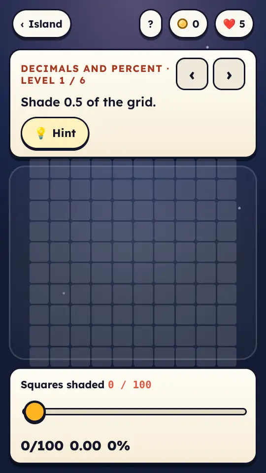

All labs › Maths › Decimals and Percent
Maths lab · Gauri's Garden
Decimals and Percent
दशमलव और प्रतिशत · सौ वर्गों की ग्रिड रंगो
Shade a hundred-square grid to show decimals and percentages, and move between 0.5, 50% and one half.
- Maths
- Inventor · ages 10+
- 6 levels
- English · हिंदी
- Free, no sign-up

How it works
Shade the grid
- The grid has 100 squares. Each square is 1 hundredth.
- 0.5 means 50 squares, which is 50% or half.
- Slide to shade the right number of squares.
Stuck? Every level has a hint, and a "Show me" walk-through.
Why it works
The big idea
A hundred grid is a rupee in paise: each square is one paisa of the hundred. 0.25 of the grid is 25 squares, which is 25 per cent, which is a quarter.
What children learn
Skills in this lab
- Tenths and hundredths
- Converting between decimals, fractions and percentages
- Comparing decimals
For parents and teachers
This lab is in the Inventor band (ages 10+). Each player picks a band, and sees only the labs made for it.
Curio Island is free in the browser with no sign-up. Progress is saved on this device only. Ads are child-safe and non-personalised, and never appear inside a lab.
Part of Gauri's Garden on the island. 6 levels to finish.